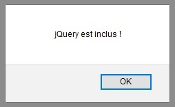

Nous allons voir les différentes manières "d'installer" et d'utiliser jQuery au sein de nos projets web. Nous trouverons les sources de la librairie sur le site officiel de jQuery.
Celles-ci étant plutôt utilisées pour implémenter des fonctionnalités entre deux systèmes distincts, la frontière entre les librairies et les API reste relativement mince. Elles sont à ne pas confondre avec les frameworks, qui sont, eux, utilisés pour donner une architecture de base à nos applications web.
Il est possible de télécharger le fichier source de jQuery sur le site officiel dans sa version classique jquery.js ou dans sa version minifiée jquery.min.js.
Un fichier minifié a le même contenu que le fichier classique, au détail près qu'un algorithme l'a parsé pour supprimer ce qui n'est pas essentiel à la bonne exécution du code, comme :
Un tel fichier n'est pas lisible pour nous, développeurs, mais il a le mérite d'être plus léger et moins coûteux pour le chargement de nos pages web.
See the Pen Untitled by OpenSpirit (@OpenSpirit) on CodePen.
Pour l'inclure dans nos propres scripts, il suffit de procéder de la même manière que pour n'importe quel autre script.
Cependant, en vue de l'utiliser au sein des scripts suivants, il faudra veiller à l'inclure avant ceux-ci.
See the Pen Untitled by OpenSpirit (@OpenSpirit) on CodePen.
See the Pen Untitled by OpenSpirit (@OpenSpirit) on CodePen.
Un CDN, pour Content Delivery Network (ou Réseau de diffusion de contenu), est constitué d'ordinateurs reliés en réseau à travers Internet qui coopèrent afin de mettre à disposition du contenu ou des données à des utilisateurs.
Google, par exemple, met à disposition une interface permettant de diffuser du contenu. Concrètement, nous pouvons inclure une librairie référencée dans un CDN via une requête HTTP.
Cela nous permettra de ne pas avoir à télécharger de fichiers et de profiter des mises à jour de la librairie.
Du côté des points faibles, cela rajoute une requête HTTP à l'exécution de notre page web, ce qui peut être une source de lenteur.
Les différents CDN sur lesquels est hébergé jQuery sont répertoriés ici .
See the Pen Untitled by OpenSpirit (@OpenSpirit) on CodePen.
Via un CDN, une librairie est incluse de la même manière qu'un script classique sauf que l'attribut src est une URL vers un autre site.
Il y a deux manières d'inclure jQuery dans une page :